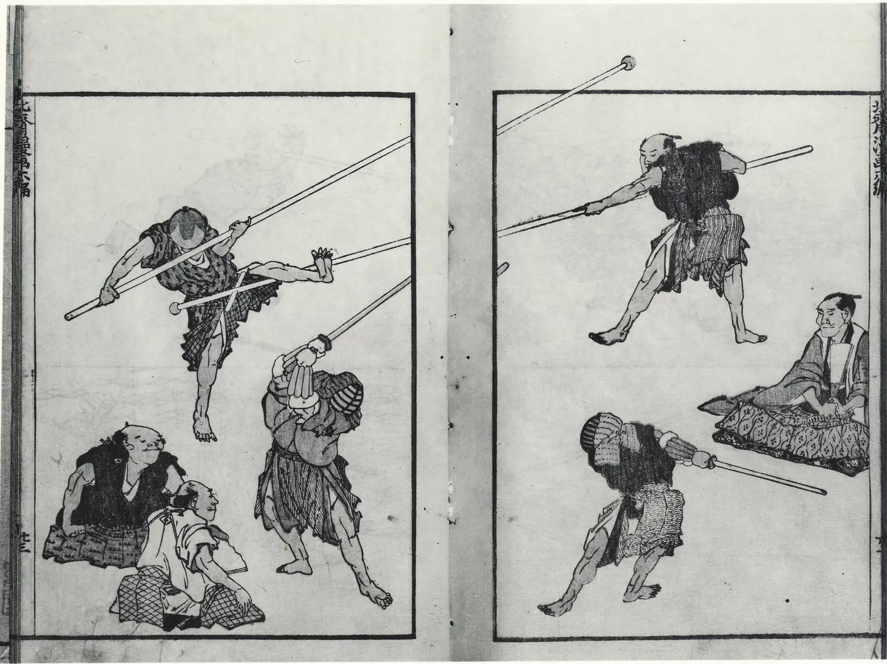
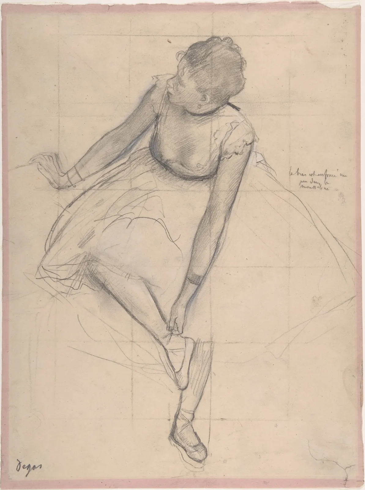

제스처와 크로키
카페 창가에서 누군가 의자에서 일어나 가방을 메고 나가기까지 30초쯤 걸린다. 그 사람을 그리려고 연필을 들었다면 무엇부터 그리겠는가. 많은 사람이 얼굴부터 그린다. 눈과 코를 공들여 그리는 사이 그 사람은 문밖으로 나가고, 종이에는 잘 그린 얼굴 하나만 남는다. 움직이는 사람을 그리는 일은 정확함과의 싸움이 아니라 시간과의 싸움이다. 이 장은 그 시간 안에 무엇을 먼저 잡아야 하는지를 다룬다. 몸을 꿰는 한 줄, 무게가 실린 발, 엇갈린 어깨와 골반, 그리고 움직임 가운데 어느 순간을 고를지다.
- 제스처 드로잉과 크로키가 무엇을 먼저 잡는 연습인지 설명하고, 동작선을 I·C·S의 세 꼴로 구별한다.
- 무게중심과 지지 기저로 사람이 서 있는 그림과 넘어지는 그림을 가르고, 목 아래에서 내린 다림줄로 점검한다.
- 콘트라포스토에서 어깨선과 골반선이 서로 반대로 기우는 이유를 시뮬레이터로 확인한다.
- 움직임 가운데 그릴 순간을 고르는 기준(힘을 모은 순간, 실루엣 시험)을 쓴다.
- 30초·2분·10분의 시간 예산에 따라 그리는 순서를 정하고, 직접 크로키를 해 본다.
30초 안에 무엇을 그리나
움직이는 사람이나 짧게 포즈를 잡은 모델을 빠르게 그리는 연습을 크로키(Croquis)라고 부른다. 프랑스어로 "밑그림, 스케치"라는 뜻인데, 한국과 일본의 미술 교육에서는 주로 짧은 시간 안에 사람의 몸을 그리는 연습을 가리킨다. 영어권에서는 같은 연습을 제스처 드로잉(Gesture drawing)이라고 많이 부른다. 여기서 제스처는 손짓 하나가 아니라 몸 전체가 지금 무엇을 하고 있는가, 곧 동작의 기세다.
미국의 미술 교육자 키먼 니콜라이디스(Kimon Nicolaïdes)는 『자연스러운 드로잉 방법』(The Natural Way to Draw, 1941)에서 제스처 연습을 윤곽 연습과 짝지어 가르쳤다. 그의 설명을 요약하면, 제스처를 그릴 때는 모델이 어떻게 생겼는지가 아니라 모델이 무엇을 하고 있는지를 그려야 하며, 손이 연필을 멈추지 않고 몸 전체를 한꺼번에 훑어야 한다. 2장의 윤곽선 드로잉이 "천천히, 보이는 대로"의 연습이라면 제스처는 "빠르게, 움직이는 대로"의 연습이다. 둘은 서로를 보완한다.
무엇이 달라지는지 먼저 눈으로 본다. 아래의 두 층은 같은 사람, 같은 동작을 그린 것이다. 왼쪽 층은 우리가 "사람"이라는 기호로 아는 모양(동그라미 머리, 네모 몸, 막대 팔다리)을 그렸고, 오른쪽 층은 30초 동안 동작선과 덩어리부터 그렸다. 경계선을 끌어 비교하고, 위의 단추로 동작을 바꿔 본다.
같은 30초, 다른 출발점
기호가 나쁜 것은 아니다. 지도나 안내판의 사람 그림은 기호라서 빨리 읽힌다. 하지만 기호는 "어떤 사람이 지금 무엇을 하는가"를 담지 못한다. 1장에서 본 "아는 것을 그리지 않고 보이는 것을 그린다"는 원칙이 사람의 몸에서는 "모양을 그리기 전에 동작을 본다"는 말이 된다. 이 장의 나머지는 그 동작을 무엇으로 잡는지에 관한 이야기다.
동작선: 몸을 꿰는 한 줄
동작을 잡는 첫 획은 동작선(Line of action)이다. 머리에서 몸통을 지나 무게를 받치는 발까지 이어지는, 몸 전체의 기세를 보여 주는 상상의 선이다. 이 말은 디즈니 애니메이터 출신인 프레스턴 블레어(Preston Blair)가 1940년대 말부터 펴낸 애니메이션 작법서들(뒤에 『Cartoon Animation』, 1994로 묶였다)을 통해 널리 퍼졌다. 만화 캐릭터의 과장된 동작을 그리기 위한 요령이었지만, 크로키에서도 똑같이 첫 획으로 쓴다.
동작선의 꼴은 크게 셋으로 나눠 보면 편하다. 휘지 않은 I자는 기울기만으로 힘을 보여 준다. 한 번 휜 C자는 몸을 한쪽으로 늘이거나 웅크리는 동작에, 두 번 휜 S자는 무게를 한 다리에 싣고 상체를 되돌린 느긋한 자세에 자주 나타난다.
아래 시뮬레이터에서는 동작선 하나만 그으면 마네킹이 그 선을 따라 선다. 빨간 손잡이 두 개(머리와 지지발)와 흰 손잡이 두 개(휨 조절)를 끌어 선을 바꾼다. 마네킹의 머리, 목 아래, 골반, 무릎, 발목은 선 위에 키의 비율대로 놓이고, 어깨선과 골반선은 그 자리에서 선과 직각을 이룬다.
동작선 하나로 서는 몸
선 하나가 바뀌면 어깨와 골반의 기울기, 팔과 노는 다리의 방향이 따라 바뀐다. 동작선이 크로키의 첫 획이 되는 이유다. 반대로 동작선 없이 머리부터 내려오면 몸통은 대개 수직으로, 어깨와 골반은 수평으로 그려진다. 우리가 아는 "차렷 자세"가 손을 끌고 가기 때문이다.
무게중심과 지지 기저
동작선이 기세라면, 그 기세가 바닥에 어떻게 서 있는지를 정하는 것은 무게다. 몸의 모든 부분의 무게를 한 점에 모았다고 칠 때 그 점을 무게중심(Center of gravity)이라고 한다. 바르게 선 어른의 무게중심은 골반 안, 키의 55% 안팎 높이에 있다. 바닥에 닿은 발들을 둘러싼 넓이는 지지 기저(Base of support)다. 가만히 서 있으려면 무게중심에서 수직으로 내린 선이 지지 기저 안에 떨어져야 한다.
무게중심은 몸을 여러 토막(머리, 몸통, 위팔, 아래팔, 손, 넓적다리, 종아리, 발)으로 나눠 각 토막의 무게와 위치를 평균하면 구할 수 있다.
아래 시뮬레이터의 마네킹은 몸무게 60 kg이다. 오른쪽 손(화면 오른쪽)에 책을 들게 하고, 손잡이를 끌어 팔을 움직이며, 몸통을 기울여 균형을 맞춘다. 바닥의 초록 띠가 지지 기저, 검은 기호가 무게중심이다.
무게중심 위에 서기
그림을 그릴 때 무게중심을 계산할 수는 없다. 대신 크로키 강사들이 오래 써 온 요령이 있다. 쇄골 사이의 오목한 곳(목 아래 패인 곳)에서 수직선을 내리는 것이다. 이 선을 다림줄(Plumb line)이라고 부른다. 한 다리에 무게를 실은 사람이라면 다림줄은 그 발 위나 아주 가까이에 떨어지고, 두 발에 고르게 섰다면 두 발 사이에 떨어진다. 다림줄은 무게중심 자체가 아니라 그 대용품이다. 상체가 크게 기울거나 팔에 무거운 것을 들면 둘이 어긋나므로, 그럴 때는 몸 전체의 덩어리가 어느 쪽으로 쏠렸는지를 함께 본다.

콘트라포스토: 엇갈린 두 선
두 발에 고르게 서 있던 사람이 한 다리에 무게를 실으면 몸에 정해진 순서의 변화가 일어난다. 무게를 받은 다리 쪽 골반이 올라가고, 반대쪽 골반은 내려간다. 그러면 몸통은 그대로 두면 노는 다리 쪽으로 쓰러지므로, 허리가 휘어 어깨를 반대로 되돌린다. 결과적으로 골반선과 어깨선이 서로 반대 방향으로 기운다. 이 엇갈림을 이탈리아어로 콘트라포스토(Contrapposto), 곧 "맞세워 놓음"이라고 부른다.
서양 조각에서 이 자세는 기원전 5세기 그리스에서 나타났다. 기원전 480년 무렵의 「크리티오스의 소년」(Kritios Boy, 아테네 아크로폴리스 박물관)이 이른 예로 꼽히고, 기원전 5세기 중반 폴리클레이토스의 「창을 든 사람」(Doryphoros)은 이 자세를 비례 규범과 함께 체계화한 작품으로 알려져 있다(원작은 전하지 않고 로마 시대의 대리석 복제가 남았다. 비례 규범은 11장). 르네상스 때 도나텔로와 미켈란젤로가 이 자세를 다시 살렸고, 이름도 그때 붙었다. 인도 조각에는 무릎, 허리, 목에서 세 번 꺾는 삼굴(Tribhanga) 자세가 있어서, 불교 조각을 따라 동아시아의 보살상에도 허리를 한쪽으로 튼 자세가 전해졌다. 몸무게를 한 다리에 실은 사람의 엇갈림은 여러 문화가 각자 관찰하고 저마다의 양식으로 다듬은 것이다.
아래 시뮬레이터에서 체중을 한 다리로 옮겨 본다. "어깨 반응"은 어깨가 골반과 얼마나 반대로 기우는지를 정한다. +1이면 보통의 콘트라포스토, 0이면 어깨가 골반을 따라 그대로 기울고, 음수면 같은 방향으로 더 기운다.
콘트라포스토: 골반과 어깨의 엇갈림
어깨 반응을 0이나 음수로 내렸을 때 마네킹이 어색해 보인 것은 해부학 지식 때문이 아니다. 눈은 그림 속 몸이 서 있을 수 있는지 없는지를 거의 즉시 알아챈다. 그래서 콘트라포스토 그림의 첫 두 획은 서로 반대로 기운 어깨선과 골반선이고, 셋째 획이 지지발로 내리는 다림줄이다. 세 획이 맞으면 나머지 선이 다소 틀려도 그림은 선다.
어느 순간을 그릴까
그림은 움직임의 한 순간만 담는다. 그렇다면 어느 순간을 골라야 움직임이 가장 잘 전해질까. 독일의 극작가이자 비평가 고트홀트 에프라임 레싱(Gotthold Ephraim Lessing)은 『라오콘』(Laokoon, 1766)에서 이 문제를 다뤘다. 그의 주장을 요약하면, 시간 속에서 펼쳐지는 시와 달리 그림과 조각은 한 순간만 보여 줄 수 있으므로, 앞뒤를 상상하게 만드는 가장 "풍부한" 순간을 골라야 하며 그것은 대개 절정 자체가 아니라 절정 직전이다. 절정을 보여 주면 상상할 것이 남지 않기 때문이다. 이 생각은 흔히 함축적 순간(Pregnant moment)이라고 불린다.
아래 시뮬레이터는 걷기와 던지기 두 동작의 한 주기를 옆에서 본다. 가로로 끌거나 위쪽 필름 띠를 눌러 시간을 옮기며, 어느 순간이 "움직이는 중"으로 읽히는지 본다. 빨간 선은 동작선, 초록 띠는 지지 기저, 검은 기호는 무게중심이다. 필름 띠 위의 빨간 삼각형은 흔히 그리는 순간이다.
움직임의 어느 순간을 고를까
무게중심이 지지 기저 밖에 있는 그림이 늘 틀린 그림은 아니다. 가만히 선 사람이라면 넘어지는 그림이지만, 걷거나 뛰거나 던지는 사람이라면 그 불균형이 곧 움직임이다. 앞 절의 "직접 해 보기"에서 따로 모아 둔 사진들이 그렇다. 정지한 자세에서는 다림줄을 지지발 위에 맞추고, 움직이는 자세에서는 일부러 어긋나게 둔다. 규칙을 언제 깨는지 아는 것이 규칙의 쓸모다.
순간을 골랐으면 그 순간이 윤곽만으로 읽히는지 확인한다. 그림을 검게 칠해 실루엣만 남겼을 때도 무엇을 하는지 알 수 있는가를 보는 실루엣 시험(Silhouette test)이다. 애니메이션 작법서들이 흔히 권하는 점검인데, 크로키에도 그대로 쓸 수 있다.
30초, 2분, 10분: 시간이 정하는 순서
크로키 모임은 보통 짧은 포즈에서 시작해 점점 길게 간다. 30초나 1분 포즈를 여러 번, 그다음 2분, 5분, 마지막에 10분 이상의 포즈를 한두 번 하는 식이다. 짧은 포즈는 손을 풀고 큰 것만 잡게 만들고, 긴 포즈는 그 위에 부피와 윤곽을 쌓게 한다. 시간이 다르면 그리는 양이 아니라 그리는 순서가 중요해진다.
아래 시뮬레이터는 같은 사람을 두 가지 순서로 그린다. 왼쪽은 동작선 → 덩어리 → 어깨선·골반선 → 팔다리 막대 → 손발의 자리 → 부피 → 윤곽 → 명암 → 얼굴 순서, 오른쪽은 얼굴부터 공들여 아래로 내려가는 순서다. 시간 막대를 움직여 30초, 2분, 10분에서 각각 무엇이 남는지 본다.
시간 예산과 그리는 순서
"큰 것부터"는 언제 멈춰도 그림이 성립하는 순서다. 30초에 멈추면 30초짜리 그림이, 10분에 멈추면 10분짜리 그림이 된다. "세부부터"는 끝까지 가야만 성립하고, 끝까지 가도 전체의 비례와 자세를 맞추기 어렵다. 그렇다고 세부부터 그리는 화가가 없는 것은 아니다. 대상을 오래 볼 수 있는 정물이나 초상에서는 한 부분에서 시작해 이웃한 부분을 재며 넓혀 가는 방식도 쓴다(2장의 측정). 움직이는 사람 앞에서는 그 시간이 없을 뿐이다.

붓 한 번의 움직임: 동아시아의 인물
동작을 몇 개의 선으로 요약하는 일은 서양 크로키만의 것이 아니다. 조선 후기의 화가 김홍도의 『단원 풍속도첩』(보물, 국립중앙박물관)에 실린 「씨름」은 가운데에서 맞붙은 두 사람과 그들을 둥글게 둘러싼 구경꾼들로 짜여 있다. 한 사람이 상대를 들어 올리는 승부의 순간을 골랐고, 두 씨름꾼의 기울어진 몸이 무게가 어느 쪽으로 넘어가는지를 말해 준다. 둘레의 구경꾼들은 앉은 자세라 안정되고, 그 정지가 가운데의 움직임을 더 크게 보이게 한다. 앞 절의 호쿠사이 그림처럼 움직이는 몸과 멈춘 몸을 한 화면에 둔 구성이다.
중국 남송의 양해(梁楷)는 몇 번의 넓은 먹 붓질로 인물을 그리는 감필(減筆) 화풍으로 알려져 있다. 그의 이름으로 전하는 「발묵선인도」(潑墨仙人圖, 타이베이 국립고궁박물원)는 비틀거리는 신선을 먹 덩어리 몇 개로만 그렸는데, 무거운 배와 앞으로 쏠린 걸음이 한눈에 읽힌다. 세부를 덜어 낼수록 동작의 기세만 남는다는 점에서, 30초 크로키가 도달하려는 곳과 같은 방향을 가리킨다. 다만 감필은 오랜 연습 끝에 고른 획을 남기는 양식이고, 크로키는 빨리 그려야 해서 줄인 것이니 출발점은 다르다. 앞의 『호쿠사이 망가』가 한 쪽에 여러 동작을 모은 것도, 동작을 모아 익히는 그림본의 전통에 속한다.
제스처 실험대
이제 앞의 도구를 한자리에 모은다. 왼쪽(좁은 화면에서는 위)의 마네킹은 머리, 가슴, 골반, 두 손목, 두 발목의 손잡이로 자세를 잡는다. 앞모습에서는 작은 손잡이 두 개로 어깨선과 골반선의 기울기도 바꾼다. 동작선, 무게중심과 지지 기저, 어깨·골반선을 켜고 끄며 자세를 점검한다.
오른쪽(아래)은 종이다. "30초"나 "2분"을 누르면 시간이 흐르기 시작하고, 그동안 종이 위를 끌어 모델을 크로키한다. 시간이 끝나면 더 그릴 수 없고, 내 그림의 크기에 맞춘 모델의 동작선이 점선으로 겹쳐진다. 타이머 없이 연습으로 그려도 된다.
제스처 실험대: 자세 잡기와 크로키
서윤의 작업 노트
얼굴만 남은 스무 장
5월 셋째 토요일, 서윤은 처음으로 도경의 드로잉 모임에 끝까지 남았다. 서점 2층의 긴 탁자에 여섯 명이 둘러앉았고, 모델은 회원들과 서점 주인이 돌아가며 섰다. 30초 포즈 스무 번(10분), 2분 포즈 여덟 번(16분). 30초 스무 장을 넘겨 보니 열네 장에는 머리와 어깨만 있었다. 70%다. 서윤은 회사에서 화면을 설계할 때 늘 와이어프레임부터 그리면서, 사람을 그릴 때는 눈부터 그리고 있었다. 도경은 서윤의 종이를 한참 보더니 연필로 한 장의 구석에 휘어진 선 하나를 그었다. "얼굴은 마지막이야. 먼저 선 하나, 그다음 발."
2분 포즈부터 서윤은 순서를 바꿨다. 머리 꼭대기에서 지지발까지 한 획, 그다음 어깨와 골반의 쐐기 두 개, 다림줄. 그림은 거칠어졌지만 여덟 장 모두 몸 전체가 종이 안에 들어왔다. 모임이 끝난 뒤 서윤은 1층에서 책을 고르는 손님들을 멀리서 그렸다. 진짜 손님은 포즈를 잡아 주지 않아서 30초도 길었다. 그날 모은 크로키는 마흔 장이 넘었다. 이 가운데 「골목 산책」에 넣을 세 점을 고르는 기준을 정했다.
첫째, 검게 칠해도 무엇을 하는지 읽혀야 한다(실루엣 시험). 둘째, 동작선이 한 획으로 읽혀야 하고, 세 점의 동작선은 서로 달라야 한다. 책자를 넘길 때 같은 자세가 되풀이되지 않게 I, C, S를 하나씩 둔다. 셋째, 멈춘 자세는 다림줄이 지지발 위에 떨어져야 하고, 그렇지 않은 그림은 움직이는 순간일 때만 쓴다. 넷째, 서점에서 하는 일이 보여야 한다. 다섯째, 완성도보다 동작을 본다. 30초짜리도 뽑을 수 있다.
서윤의 선택은 이렇다. C는 위 칸의 책에 손을 뻗은 대학생(30초). 이 책의 마네킹 모형으로 같은 자세를 재면 무게중심이 지지발 가장자리에서 0.7 cm 안쪽에 겨우 걸린다. 그래서 손끝이 서가에 닿은 것으로 그리기로 했다. S는 서가 기둥 옆에서 한 다리에 기대 책을 읽는 노신사(2분). 모형으로는 골반선 9°, 어깨선이 반대로 7.2° 기울고 지지발이 무게의 89%를 받으며, 다림줄은 지지발 한가운데에서 0.9 cm 안에 떨어진다. I는 책 다발을 한 손에 들고 나가는 단골(30초). 6 kg짜리 다발을 들고 몸을 곧게 세우면 무게중심이 책 쪽으로 1.7 cm 옮겨 가는데, 그 단골은 몸 전체를 반대쪽으로 4°쯤 기울여 거의 가운데(0.2 cm)로 되돌려 놓고 있었다. 서윤은 이 기울기를 과장하지 않고 그대로 두었다. 무거운 짐이 그림에서 무겁게 읽히는 것은 그 4° 덕분이다.
도경은 노신사 그림을 보고 웃었다. "얼굴은 없는데 누군지 알겠네." 그 노신사는 서점의 30년 단골이었다.
핵심 정리
- 크로키(제스처 드로잉)는 모델이 어떻게 생겼는지보다 무엇을 하고 있는지를 먼저 잡는 연습이다. 기호로 아는 사람 모양은 동작을 담지 못한다.
- 첫 획은 머리에서 지지발까지 몸을 꿰는 동작선이다. I(기울기), C(한 번 휨), S(두 번 휨)로 나눠 보면 고르기 쉽고, 과장은 몸이 받아 줄 수 있는 데까지다.
- 가만히 선 몸은 무게중심이 지지 기저 안에 있어야 한다. 그림에서는 목 아래 오목한 곳에서 내린 다림줄을 대용으로 쓴다. 짐을 든 사람은 반대쪽으로 기울어 균형을 맞춘다.
- 한 다리에 체중을 실으면 지지 다리 쪽 골반이 올라가고 어깨는 반대로 기운다(콘트라포스토). 어깨가 골반을 따라 기울면 몸이 쓰러지는 쪽으로 보인다.
- 움직임은 앞뒤를 상상하게 하는 순간(힘을 모은 순간, 걷기의 접지)에서 가장 잘 읽힌다. 움직이는 몸에서는 무게중심이 지지 기저 밖에 있는 것이 오히려 움직임이 된다. 실루엣 시험으로 읽힘을 점검한다.
- 시간이 짧을수록 순서가 중요하다. 큰 것부터 그리면 언제 멈춰도 그림이 성립하고, 세부부터 그리면 끝까지 가도 자세와 비례가 흔들리기 쉽다.
확인 퀴즈
1. 모델이 30초마다 자세를 바꾸는 크로키에서 첫 획으로 가장 알맞은 것은?
2. 오른쪽 다리에 체중을 거의 다 실은 채 서 있는 사람을 앞에서 그린다. 어깨선과 골반선은 대개 어떻게 기우는가?
3. 한 발로 선 사람을 그렸는데, 목 아래 오목한 곳에서 내린 다림줄이 지지발에서 20 cm쯤 벗어난 자리에 떨어진다. 가장 알맞은 판단은?
4. 레싱의 "함축적 순간"의 생각에 따라 공을 던지는 사람을 한 장으로 그린다면 어느 순간이 가장 알맞은가?